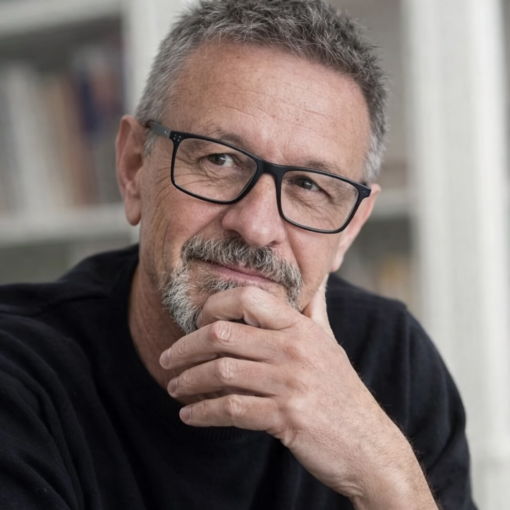

... un currículum en dos palabras

Soy especialista en innovación educativa y metodologías activas, Profesor de Intervención Sociocomunitaria (nº 1 en las pruebas selectivas), Maestro de la Comunidad de Madrid (nº1 de su especialidad en las pruebas selectivas) y experto formador de IMEFE en tecnologías de la educación orientadas a la enfermedad mental (nº1 en la totalidad de las especialidades realizadas en la promoción de referencia). Formador y docente. He trabajado en muchos contextos educativos: educación primaria, secundaria, formación profesional, adultos, educación en prisiones, educación comunitaria. Presidente del Laboratorio de Innovación educativa (Labine). Gran parte de mi tiempo lo dedico a impartir cursos de formación a docentes o impartir conferencias.
Me especialicé en gestión y dirección de centros educativos. Luego cursé estudios de postgrado en animación sociocultural y en educación de adultos. También soy Maestro.
Centro mi interés en el Aprendizaje Basado en Proyectos y Problemas (ABP), Aprendizaje Servicio (ApS), Emprendimiento Social, Técnicas Activas de Evaluación auténtica y formativa, así como Modelos de Programación por Proyectos y situaciones de aprendizaje. También sobre el uso de herramientas aplicables a las metodologías activas; tecnología, creatividad, dinámicas y estructuras cooperativas.
Cada día entro en las escuelas y compruebo que la innovación solo puede venir de quienes a diario emprenden proyectos comprometidos con su trabajo. Esta es la grasa que me invita -año tras año- a emprender proyectos ilusionantes en los que he aprendido de decenas de alumnos, alumnas y docentes con los que he tenido -y tengo- la ocasión de trabajar.
He tenido la suerte de participar como ponente en cursos y congresos sobre formación del profesorado sobre innovación educativa, mejora escolar y la aplicación del Enfoque de Proyectos en distintos países (España, Portugal, México, Colombia, Chile, Perú, Argentina, Puerto Rico). Así mismo colaboro con universidades nacionales e internacionales, colegios profesionales del ámbito educativo y redes de centros de formación públicos y privados en sus planes de formación. Compartir experiencias con tantos equipos y países me ha enriquecido mucho como profesional y como persona.
He formado parte del Consejo Asesor de la Cátedra para la Formación en la Práctica-Marchesi (INTEA), el Consejo Editorial de la Revista Internacional sobre Investigación en Educación Global y el Master en Educación para la Justicia Social de la Universidad Autónoma de Madrid y la Cátedra UNESCO de educación para la Justicia Social UAM (2018-2020). Soy he aprendido mucho siendo miembro del consejo asesor de FUHEM ecosocial.
Soy Autor de los libros 'Aprendo porque Quiero. 'El Aprendizaje Basado en Proyectos (ABP) paso a paso' (BIE, S.M, 2015.), 'Un aula un proyecto. El ABP y la nueva educación a partir de 2020' (Narcea, 2021), 'Narrar el aprendizaje. La fuerza del relato en el aprendizaje basado en proyectos' (Biblioteca de Innovación Educativa, S.M, 2018). 'Aprendo porque Quiero. 'El Aprendizaje Basado en Proyectos (ABP) paso a paso' (BIE, S.M, 2015.), "Herramientas para la educación formal y no formal: El enfoque de proyectos" (INTEF, 2017) y he participado en obras colectivas como 'Expresión y comunicación en educación infantil' (McGraw Hill, 2010), 'Hablemos de educación infantil´(Wolter Kluwer, 2012), 'Buenas prácticas de Educación para el desarrollo. Vicente Ferrer' (AECID, 2015), 'Las tareas escolares después de la escuela' (Consejo Escolar de la Comunidad de Madrid, 2016) y ''Desing for change. Un movimiento educativo para cambiar el mundo' (BIE.SM, 2017), 'Pacto educativo global' (OIEC, SM, 2020). Coordinador y autor del libro "Miradas que educan. Diálogos sobre educación para la Justicia Social" (Baladre, 2021). También he prologado diversos libros para Elizondo (2020), Riquelme et. al. (2019), Basurto (2021), Sánchez y Ariza (2026), etc.
También soy autor de distintos cursos online como "El Aprendizaje Basado en Proyectos la metodología ideal para educar a los nuevos ciudadanos globales". (OEI Mexico), Detonantes en "Situaciones de Aprendizaje" (Junta de Andalucía), "Metodologías Activas" (Cátedra para la formación en la práctica-Marchesi) y el de "Herramientas para la educación formal y no formal: El enfoque de proyectos" (INTEF-Aula Mentor). Así como múltiples colaboraciones en obras colectivas sobre innovación y metodologías activas como el realizado para Escuelas Católicas de Madrid sobre Educación Global para la ciudadanía en el marco del ABP y la metodología Oasis. También el dedicado a la implementación de los Objetivos de Desarrollo Sostenible (ODS) realizado para la Organización de Estados Iberoamericanos (OEI) en Mexico o la formación para la elaboration de Situaciones de Aprendizaje en el marco de la LOMLOE para la Comunidad Autónoma de Andalucía de España (en curso).
Escribo habitualmente en Cuadernos de Pedagogía y en distintos blogs educativos como BlogCanalEduación, Revista de educación, INED21 y en distintas publicaciones especializadas: Cuadernos de Pedagogía, Revista de Innovación Educativa, Materiales de Educación de Wolter Kluwer, Revista de la Sociedad Nacional de Pedagogía 'Bordón', Mc Graw Hill, S.M., Revista Internacional sobre investigación en Educación Global y para el Desarrollo, Revista Debates (Consejo Asesor de la Comunidad de Madrid), etc. También se han publicado numerosas entrevistas y podcast en diversos medios de comunicación.
En 2022 fui nombrado Parlamentario en el Parlamento Mundial de la Educación, he recibido la insignia de plata por la labor educativa en la función pública en la Comunidad de Madrid (España), la medalla de plata al mérito penitenciario por la labor educativa en estos centros. He sido reconocido como un de los tres docentes más innovadores de España. Premio Vicente Ferrer por proyectos de cooperación internacional por los cuales he obtenidos varios premios a la mejor práctica educativa internacional. Empleo de los recursos tecnológicos en educación para el Ministerio de Educación en España, sello buenas prácticas o dos premios internacionales por proyectos educativos internacionales entre otros premios por mi actividad docente que me invitan a seguir animando y apoyando el cambio en la educación.